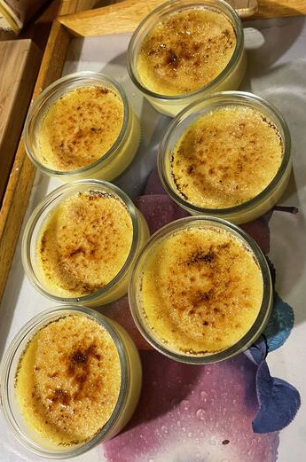

Creme brulee
Crème brûlée is a classic French dessert, consisting of a pudding topped with burnt brown sugar; resulting in a delightful crispy top with a soft pudding base.

Figure 8: Crème brûlée served with finished burnt sugar topping.
Ingredients
The following list of ingredients serves 4 people.
- 0.7 vanilla bean or some drops of vanilla extract
- 3.3 dl cream
- 0.7 dl milk
- 4 egg yolks
- 1 dl sugar
Topping:
- 0.7 dl brown sugar or raw sugar
Instructions
- Split the vanilla bean and put it in a pot with cream and milk. Heat until lukewarm.
- Whip yolks and sugar, then add to the cream mixture. Let rest overnight in fridge.
- Set oven to 100°C.
- Pour batter into oven-safe dishes and bake for 45–50 minutes.
- Cool in fridge for a few hours.
- Top with sugar and burn it with a torch.